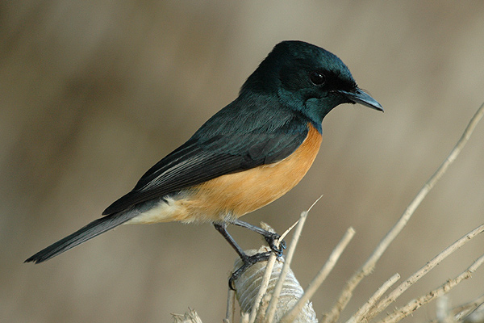

Myiagra vanikorensis
A small passerine, the Vanikoro Flycatcher is about 13 cm long and weighs around 13 g. It has a large, slightly hooked black bill and coal black legs. The different genders can be distinguished because only the male has dark blue-black plumage over the head and throat, back, tail and wings, and a washed out red belly with a white rump.